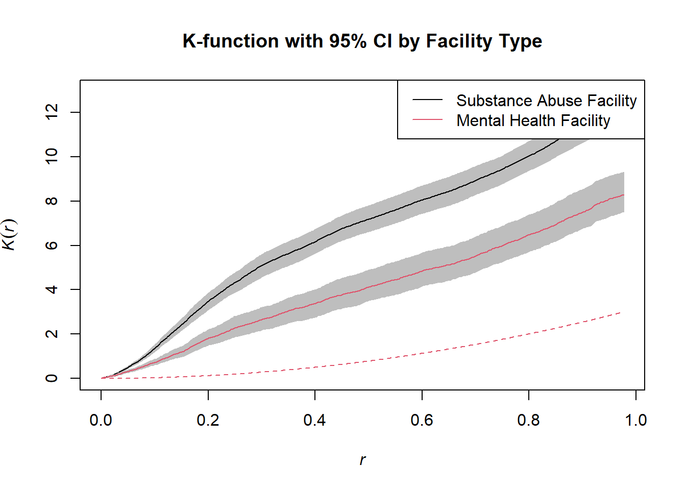
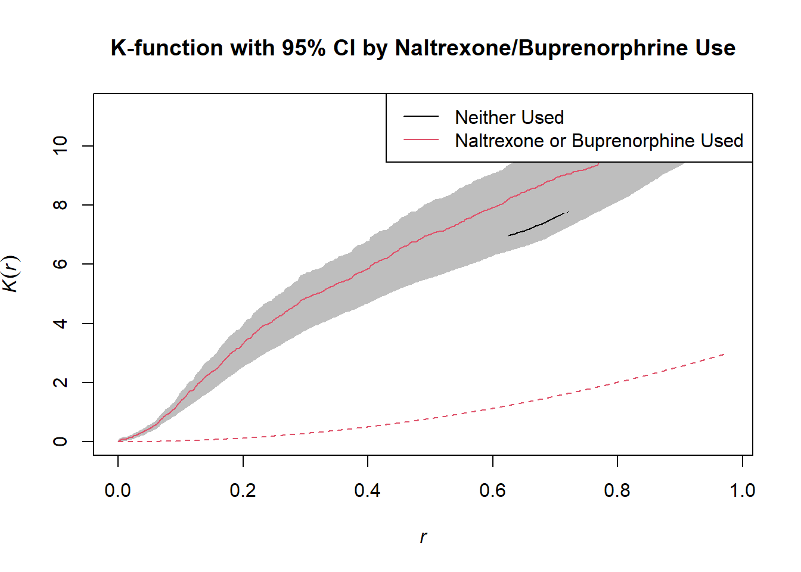

library(ggplot2)
library(naniar) # Used to visualize missing data
library(kableExtra) # Used for pretty printing (kable_styling)
library(table1) # Used to make Table 1
library(tidyverse)
library(spatstat) # For running geospatial analyses
library(ggmap) # For plotting geospatial data with stadiaThe Opioid Epidemic in Colorado: A Geospatial Analysis
Introduction
This is the final project for BIOS 6640: R for Data Science. In this project we analyze spatial variation patterns in the presence of Behavioral Health Treatment Service Providers throughout Colorado to investigate the opioid epidemic.
Background
The opioid epidemic is a significant public health crisis in Colorado, with severe impacts on communities, families, and individuals themselves. Prescription pain killers such as oxycodone and hydrocodone are significant causes of opioid addiction, with approximately 70% of heroin users in Colorado reporting that their drug use began with these prescription medications (1). Additionally, fentanyl overdoses have increased by 10x since 2016, with the number of deaths from opioid overdose increasing by 54% from 2019 to 2020 alone (2).
The data set used for this analysis is from the Substance Abuse and Mental Health Services Administration (SAMHSA) in collaboration from the Colorado Public Health and Environment Department (CDPHE), and tracks the different substance use treatment facilities in Colorado. This data set includes the geospatial location (latitude and longitude) of each facility, as well as the type (e.g. mental health facility). The two questions that will be addressed are:
Are the spatial distributions of Behavioral Health Treatment Service Providers through-out Colorado different by Facility Type?
Are the spatial distributions of Behavioral Health Treatment Service Providers through-out Colorado different based on whether Naltrexone or Buprenorphine is used in treatment?
Data Preparation
# Read in data set
data <- read_csv(r"(C:\Users\sviea\Documents\R for Data Science\SAMHSA.csv)")Rows: 506 Columns: 42
── Column specification ────────────────────────────────────────────────────────
Delimiter: ","
chr (34): Provider_Name, Provider_Name2, Address, Address2, City, State, Co...
dbl (6): X, Y, OBJECTID, Zip, LATITUDE, LONGITUDE
lgl (1): Methadone_Detoxification
dttm (1): Date_Last_Update
ℹ Use `spec()` to retrieve the full column specification for this data.
ℹ Specify the column types or set `show_col_types = FALSE` to quiet this message.# Examine data set
pretty_print(head(data))| X | Y | OBJECTID | Provider_Name | Provider_Name2 | Address | Address2 | City | State | Zip | County | Phone | Website_URL | Date_Last_Update | Type_ | Detoxification | Mental_Health | Substance_Abuse | Transitional_Housing | Opiod_Treatment_Settings | SAMHSA_Cert_Opioid_Treatment_Program | Buprenorphine_Maintenance | Buprenorphine_Maintenance_for_Predetermined_Time | Buprenorphine_Detoxification | Buprenorphine_used_in_Treatment | Naltrexone_used_in_Treatment | Methadone_Maintenance | Methadone_Maintenance_for_Predetermined_time | Methadone_Detoxification | Prescribes_administers_Buprenorphine | Prescribes_administers_Naltrexone | Relapse_prevention_from_Naltrexone | Use_methadone_buprenorphine_for_pain_mgmt_emergency | Accepts_clients_on_opioid_medication | Do_not_use_medication_for_Opioid_Addiction | Does_not_treat_Opioid_Addiction | Facility_Type | Age_Groups_Served | Date_Data_Published_CDPHE | Directions | LATITUDE | LONGITUDE |
|---|---|---|---|---|---|---|---|---|---|---|---|---|---|---|---|---|---|---|---|---|---|---|---|---|---|---|---|---|---|---|---|---|---|---|---|---|---|---|---|---|---|
| -105.0973 | 39.57858 | 1 | Shiloh House | Estes | 7623 South Estes Court | NA | Littleton | CO | 80128 | Jefferson | 303-932-9599 | http://shilohhouse.org/ | 2018-03-06 16:18:03 | Mental health treatment | NA | Mental health treatment | NA | NA | n/a | NA | NA | NA | NA | NA | NA | NA | NA | NA | NA | NA | NA | NA | NA | NA | NA | Residential treatment center (RTC) for children | Children and Adolescents | October 2018 | https://maps.google.com/?q=7623 South Estes Court, Littleton, CO 80128 | 39.57858 | -105.0973 |
| -105.0856 | 39.58636 | 2 | Shiloh House | Yarrow | 7227 South Yarrow Court | NA | Littleton | CO | 80128 | Jefferson | 303-932-9599 | http://shilohhouse.org/ | 2018-03-06 16:18:04 | Mental health treatment | NA | Mental health treatment | NA | NA | n/a | NA | NA | NA | NA | NA | NA | NA | NA | NA | NA | NA | NA | NA | NA | NA | NA | Residential treatment center (RTC) for children | Children and Adolescents | October 2018 | https://maps.google.com/?q=7227 South Yarrow Court, Littleton, CO 80128 | 39.58636 | -105.0856 |
| -105.0708 | 39.59042 | 3 | Shiloh Home Inc | Portland | 6629 West Portland Avenue | NA | Littleton | CO | 80128 | Jefferson | 303-973-9677 | http://www.shilohhouse.org | 2017-02-27 11:25:37 | Mental health treatment | NA | Mental health treatment | NA | NA | n/a | NA | NA | NA | NA | NA | NA | NA | NA | NA | NA | NA | NA | NA | NA | NA | NA | Residential treatment center (RTC) for children | Children and Adolescents | October 2018 | https://maps.google.com/?q=6629 West Portland Avenue, Littleton, CO 80128 | 39.59042 | -105.0708 |
| -105.0434 | 39.75941 | 4 | Tennyson Center for Children at | Colorado Christian Home | 2950 Tennyson Street | NA | Denver | CO | 80212 | Denver | 303-433-2541 | http://www.tennysoncenter.org | 2017-02-27 11:25:37 | Mental health treatment | NA | Mental health treatment | NA | NA | n/a | NA | NA | NA | NA | NA | NA | NA | NA | NA | NA | NA | NA | NA | NA | NA | NA | Residential treatment center (RTC) for children | Children and Adolescents | October 2018 | https://maps.google.com/?q=2950 Tennyson Street, Denver, CO 80212 | 39.75941 | -105.0434 |
| -105.0354 | 39.77446 | 5 | Mount Saint Vincent Home | NA | 4159 Lowell Boulevard | NA | Denver | CO | 80211 | Denver | 303-458-7220 x238 | http://www.msvhome.org | 2017-06-15 09:36:46 | Mental health treatment | NA | Mental health treatment | NA | NA | n/a | NA | NA | NA | NA | NA | NA | NA | NA | NA | NA | NA | NA | NA | NA | NA | NA | Residential treatment center (RTC) for children | Children and Adolescents | October 2018 | https://maps.google.com/?q=4159 Lowell Boulevard, Denver, CO 80211 | 39.77446 | -105.0354 |
| -104.9922 | 39.85018 | 6 | Shiloh Home Inc | Sanctuary | 8461 Delaware Street | NA | Denver | CO | 80260 | Adams | 303-933-1393 | http://www.shilohhouse.org | 2017-02-27 11:25:37 | Mental health treatment | NA | Mental health treatment | NA | NA | n/a | NA | NA | NA | NA | NA | NA | NA | NA | NA | NA | NA | NA | NA | NA | NA | NA | Residential treatment center (RTC) for children | Children and Adolescents | October 2018 | https://maps.google.com/?q=8461 Delaware Street, Denver, CO 80260 | 39.85018 | -104.9922 |
Examine Missingness
# Examine Missingness
vis_miss(data)As noted in the project description, many variables have values of 0 coded as NA.
Variable Creation
We will first create a variable for whether the facility is a mental health treatment or substance abuse treatment facility.
Facility Type
# Examine Facility Types
pretty_print(table(data$Type_))| Var1 | Freq |
|---|---|
| Detoxification | 3 |
| Detoxification, Substance abuse treatment | 26 |
| Detoxification, Substance abuse treatment, Transitional housing or halfway house | 4 |
| Mental health treatment | 149 |
| Substance abuse treatment | 307 |
| Substance abuse treatment, Transitional housing or halfway house | 16 |
| Transitional housing or halfway house | 1 |
We will condense these descriptions into two facility types:
Substance Abuse Treatment
Mental Abuse Treatment
# Aggregate facility types
data <- data |>
mutate(facility = ifelse(Type_ %in% c("Mental health treatment", "Transitional housing or halfway house"), "Mental Health Treatment", "Substance Abuse Treatment"))
# Create table of facility type
pretty_print(table(data$facility))| Var1 | Freq |
|---|---|
| Mental Health Treatment | 150 |
| Substance Abuse Treatment | 356 |
Naltrexone or Buprenorphrine Used in Treatment
For question 2 we need to dummy code whether the facility uses naltrexone or buprenorphine in treatment
# Create dummy variables
data <- data |>
mutate(nal = ifelse(is.na(Naltrexone_used_in_Treatment), 0, 1),
bup = ifelse(is.na(Buprenorphine_used_in_Treatment), 0, 1),
nal_bup = ifelse(!is.na(Buprenorphine_used_in_Treatment) | !is.na(Naltrexone_used_in_Treatment), "Naltrexone or Buprenorphine Used", "Neither Used"))
# Examine
pretty_print(table(data$nal_bup))| Var1 | Freq |
|---|---|
| Naltrexone or Buprenorphine Used | 98 |
| Neither Used | 408 |
There are 408 facilities that do not use naltrexone or buprenorphine, and 98 that use at least one.
Summary
We successfully created variables for facility type (for question 1), and use of naltrexone or buprenorphine (for question 2)
Analysis One
Mental Health vs Substance Abuse Treatment Facility
To answer question one “Are the spatial distributions of Behavioral Health Treatment Service Providers through-out Colorado different by Facility Type” we will first visualize the difference in distributions over a map of Colorado. We will then test whether these distributions are significantly different using the estimated K-Functions.
Visualize Distribution of Facilities Across Colorado
First, let us begin by visualizing the distribution of behavioral care facilities across Colorado, separated by mental health vs substance abuse treatment.
# API Key from https://client.stadiamaps.com/signup
# Register Stadia API so we can use it to retrieve maps
register_stadiamaps(key = "4a4ea0df-9bd4-4ce8-a9ff-f1a7d86c0da9")
# Define the bounding box for Colorado
colo <- c(left = -109, bottom = 37, right = -102, top = 41)
# Retrieve and plot the stamen toner map of colorado
colo_map <- get_stadiamap(colo, zoom = 8, maptype = "stamen_terrain") |> ggmap()
# Plot the distribution of behavioral care facilities across Colorado, separated by facility type
colo_map +
geom_point(aes(LONGITUDE, LATITUDE), data = data, color = "red") +
stat_density_2d(aes(LONGITUDE, LATITUDE, fill = ..level..), data = data, geom = "polygon", alpha = 0.3) +
scale_fill_gradient2("Facility\nPropensity", low = "white", mid = "yellow", high = "red") +
facet_wrap(~facility, ncol=1) +
labs(title = "Distribution of Behavioral Health Treatment Service Providers throughout Colorado",
x = "Longitude",
y = "Latitude")
It appears that there is a higher concentration of substance abuse treatment facilities around Denver compared to mental health treatment facilities. This could be due to the smaller sample size of mental health treatment facilities however.
Descriptive Statistics
We will perform a simple density plot to compare the densities of both treatment facilities.
Create Geospatial Objects
# Code adjusted from SpatialPart2.Rmd from class
# Create owin and ppp objects
bbx <- owin(xrange=range(data$LONGITUDE),yrange=range(data$LATITUDE))
X <- ppp(data$LONGITUDE,data$LATITUDE,window=bbx)
# Get row length of dataset
n <- dim(data)[1]
# Create a blank vector with 0's to that specification
data_vec <- rep(0,n)
# Search facility column for mental health units
tmp <- grep("Mental", data$facility)
# Mark them as 1
data_vec[tmp] <- 1
# Ensure values are a factor and not numeric
data_vec_fact <- factor(data_vec, levels = c(0,1), labels = c("Substance Abuse Facility", "Mental Health Facility"))
# Use the ppp function from the spatstat package to create a point pattern object X.m1
X.m1 <- ppp(data$LONGITUDE,data$LATITUDE,window=bbx,marks=data_vec_fact)
# Create Plot
plot(X.m1) # Plot the densities of each treatment facility type
pretty_print(intensity(X.m1))| x | |
|---|---|
| Substance Abuse Facility | 13.803652 |
| Mental Health Facility | 5.816146 |
plot(density(split(X.m1)))Interpretation
Substance Abuse Facility: The intensity is approximately 13.80 facilities per unit area.
Mental Health Facility: The intensity is approximately 5.82 facilities per unit area.
This means that Substance Abuse Facilities are more densely distributed compared to Mental Health Facilities in Colorado.
Statistical Inference
Now that we have visualized the distribution of facility types across Colorado, let’s test whether there is a significant difference in the distribution between mental health and substance abuse treatment facilities.
This spatial data analysis will use the K-Function. This is the empirical distribution of the pairwise distance between points. It includes the variance based on bootstrapping, and describes the clustering/dispersion of points.
Perform Statistical Inference
1, 2, 3, .5....10....15....20....25....30....35....40....45....50..
..55....60....65....70....75....80....85....90....95....100....105....110
....115....120....125....130....135....140....145....150....155....160....165...
.170....175....180....185....190....195....200....205....210....215....220....225.
...230....235....240....245....250....255....260....265....270....275....280....
285....290....295....300....305....310....315....320....325....330....335....340..
..345....350....355
356.
1, 2, 3, 4.6.8.10.12.14.16.18.20.22.24.26.28.30.32.34
.36.38.40.42.44.46.48.50.52.54.56.58.60.62.64.66.68.70.72.74
.76.78.80.82.84.86.88.90.92.94.96.98.100.102.104.106.108.110.112.114
.116.118.120.122.124.126.128.130.132.134.136.138.140.142.144.146.148.
150.
Interpretation
The K-function measures the number of points within a given distance from a typical point, compared to what would be expected under complete spatial randomness (CSR). The null hypothesis here is that of complete spatial randomness (i.e. the red dotted line).
The estimated K-functions for both mental health treatment and substance abuse treatment facilities lie above the theoretical K-Function, indicating that the distributions for each facility type do not exhibit complete spatial randomness. Additionally, since the 95% CIs do not overlap, we can conclude that this difference is statistically significant.
The estimated K-Function for substance abuse treatment facilities is significantly greater than that of mental health treatment clinics indicating that the substance abuse treatment facilities are significantly more clustered than the mental health treatment clinics.
Summary
We have discovered that the distributions for both facility types are not random, and that substance abuse clinics are more clustered together compared to mental health clinics, with a approximately 13.80 Substance Abuse facilities per unit area, and approximately 5.82 Mental Health facilities per unit area.
Analysis Two
Naltrexone and Buprenorphine Use
To answer question two, “Are the spatial distributions of Behavioral Health Treatment Service Providers through-out Colorado different based on whether Naltrexone or Buprenorphine is used in treatment?” we will examine the quadrat plots and compare distributions using the estimated K-Functions.
Visualize Distribution of Facilities Across Colorado
First, let us begin by visualizing the distribution of facilities that use buprenorphrine or naltrexone across Colorado.
# Plot the distribution of behavioral care facilities across Colorado, separated by facility type
colo_map +
geom_point(aes(LONGITUDE, LATITUDE), data = data, color = "red") +
stat_density_2d(aes(LONGITUDE, LATITUDE, fill = ..level..), data = data, geom = "polygon", alpha = 0.3) +
scale_fill_gradient2("Facility\nPropensity", low = "white", mid = "yellow", high = "red") +
facet_wrap(~nal_bup, ncol=1) +
labs(title = "Distribution of Behavioral Health Treatment Service Providers throughout Colorado",
x = "Longitude",
y = "Latitude")
It appears that facilities that use naltrexone or buprenorphine may be more localized around Denver compared to facilities that do not.
Descriptive Statistics
We will be examining the quadrat plots to examine the distributions of facilities.
Prepare and Split the Data
# Split the data into two groups
bup_or_nal <- subset(data, nal_bup == "Naltrexone or Buprenorphine Used")
neither <- subset(data, nal_bup == "Neither Used")
# Create ppp for bup or nal data set
bup_or_nal_ppp <- ppp(bup_or_nal$LONGITUDE, bup_or_nal$LATITUDE, window=bbx)
# Create ppp for neither data set
neither_ppp <- ppp(neither$LONGITUDE, neither$LATITUDE, window=bbx)Perform Quadrat Count
# Define the number of quadrats
nx <- 5
ny <- 5
# Quadrat counts for Bup or Nal and Neither
bup_or_nal_quadrat <- quadratcount(bup_or_nal_ppp, nx = nx, ny = ny)
neither_quadrat <- quadratcount(neither_ppp, nx = nx, ny = ny)Plot Quadrat Counts
# Plot quadrat counts for Bup or Nal
plot(bup_or_nal_quadrat, col="blue", main = "Naltrexone or Buprenorphine Used")# Plot quadrat counts for Neither
plot(neither_quadrat, col="red", main = "Neither Used")Compare Quadrat Counts
# Summary of quadrat counts
quadrat.test(bup_or_nal_quadrat)Warning: Some expected counts are small; chi^2 approximation may be inaccurate
Chi-squared test of CSR using quadrat counts
data:
X2 = 525.98, df = 24, p-value < 0.00000000000000022
alternative hypothesis: two.sided
Quadrats: 5 by 5 grid of tilesquadrat.test(neither_quadrat)
Chi-squared test of CSR using quadrat counts
data:
X2 = 1415.8, df = 24, p-value < 0.00000000000000022
alternative hypothesis: two.sided
Quadrats: 5 by 5 grid of tiles# Chi-squared test for comparison
observed_counts <- rbind(as.vector(bup_or_nal_quadrat), as.vector(neither_quadrat))
chisq.test(observed_counts)Warning in chisq.test(observed_counts): Chi-squared approximation may be
incorrect
Pearson's Chi-squared test
data: observed_counts
X-squared = 24.761, df = 24, p-value = 0.4188Interpretation
The results for the Chi-squared test of complete spatial randomness for facilities that use nalextrone or buprenorphrine (2 = 525.98, df = 24, p-value < 0.0001) and those that use neither (X2 = 1415.8, df = 24, p-value < 0.0001) are highly significant, indicating that there is spatial preference for both facility types (i.e. they are not CSR).
However, the Pearson Chi-Squared test comparing the distributions of both was not significant (X-squared = 24.761, df = 24, p-value = 0.42), indicating that there is not a significant difference in the distribution of facilities based on nalextrone or buprenorprhine use.
Sensitivity Analysis
We can also perform this analysis as many different bin sizes.
# Define the number of quadrats
nx <- 3
ny <- 3
# Quadrat counts for Bup or Nal and Neither
bup_or_nal_quadrat <- quadratcount(bup_or_nal_ppp, nx = nx, ny = ny)
neither_quadrat <- quadratcount(neither_ppp, nx = nx, ny = ny)
# Summary of quadrat counts
quadrat.test(bup_or_nal_quadrat)
Chi-squared test of CSR using quadrat counts
data:
X2 = 144.45, df = 8, p-value < 0.00000000000000022
alternative hypothesis: two.sided
Quadrats: 3 by 3 grid of tilesquadrat.test(neither_quadrat)
Chi-squared test of CSR using quadrat counts
data:
X2 = 623.56, df = 8, p-value < 0.00000000000000022
alternative hypothesis: two.sided
Quadrats: 3 by 3 grid of tiles# Chi-squared test for comparison
observed_counts <- rbind(as.vector(bup_or_nal_quadrat), as.vector(neither_quadrat))
chisq.test(observed_counts)Warning in chisq.test(observed_counts): Chi-squared approximation may be
incorrect
Pearson's Chi-squared test
data: observed_counts
X-squared = 6.4499, df = 8, p-value = 0.597Even at 9 bins total, we get the same results, giving us more confidence in our findings.
Statistical Inference
We will again perform K-Function analyses to compare the distributions between facilities that use nalextrone/buprenorphrine and those that do not.
1, 2, 3, .5....10....15....20....25....30....35....40....45....50..
..55....60....65....70....75....80....85....90....95....100....105....110
....115....120....125....130....135....140....145....150....155....160....165...
.170....175....180....185....190....195....200....205....210....215....220....225.
...230....235....240....245....250....255....260....265....270....275....280....
285....290....295....300....305....310....315....320....325....330....335....340..
..345....350....355....360....365....370....375....380....385....390....395....400
....405..
408.
1, 2, 3, 4, 5, 6, 7, 8, 9, 10, 11, 12, 13, 14, 15, 16, 17, 18, 19, 20,
21, 22, 23, 24, 25, 26, 27, 28, 29, 30, 31, 32, 33, 34, 35, 36, 37, 38, 39, 40,
41, 42, 43, 44, 45, 46, 47, 48, 49, 50, 51, 52, 53, 54, 55, 56, 57, 58, 59, 60,
61, 62, 63, 64, 65, 66, 67, 68, 69, 70, 71, 72, 73, 74, 75, 76, 77, 78, 79, 80,
81, 82, 83, 84, 85, 86, 87, 88, 89, 90, 91, 92, 93, 94, 95, 96, 97,
98.
Interpretation
Here we can see that the CI’s for facilities that use Naltrexone/Buprenorphrine and those that do not overlap, confirming the results from the quadrat plots that these distributions across Colorado are not significantly different.
Summary
We discovered that facilities that use naltrexone/buprenorphrine and those that do not both show spatial preference. Additionally, we learned that their distributions did not significantly differ from each other.
Results and Conclusion
Analysis One
To assess question one, facilities were separated by type (NMental Health Treatment = 150, NSubstance Abuse Treatment = 356) (Note: facilities which performed detoxification only were considered substance abuse facilities, and one transitional/halfway house was considered a mental health treatment facility). The location and density of every Behavioral Health Treatment facility was then plotted against a map of Colorado and separated by facility type (see Figure 1). Density plots were then made to compare the intensities between the distribution of substance abuse and mental health facilities (See Figure 2). While both facility types were localized around Denver, substance abuse facilities had an intensity of 13.80 facilities per unit area, compared to mental health facilities which had approximately 5.82 facilities per unit area.
To test whether the distributions between substance abuse vs mental health facilities were statistically significant, we performed spatial data analysis using the estimated K-Functions for each facility type (See Figure 3). The estimated K-functions for both mental health treatment and substance abuse treatment facilities were above the theoretical K-Function, indicating that the distributions for each facility type do not exhibit complete spatial randomness. Additionally, since the 95% CIs do not overlap, we concluded that this difference was statistically significant. Finally, the estimated K-Function for substance abuse treatment facilities was significantly higher than that of mental health treatment clinics, indicating that substance abuse treatment facilities are significantly more clustered than mental health treatment clinics, aligning with the findings from the descriptive statistics.
Analysis Two
To assess question two, facilities were separated into those that used nalextrone or buprenorphrine during treatment (N = 98), and those that did not (N = 408). The location and density of every Behavioral Health Treatment facility by these categories was then plotted against a map of Colorado (See Figure 4). For descriptive statistics, 5x5 quadrat plots were made (See Figure 5), and the quadrat counts of facilities that use nalextrone or buprenorphrine and those that do not were compared. The results for the Chi-squared test of complete spatial randomness for facilities that use nalextrone or buprenorphrine (X2 = 525.98, df = 24, p-value < 0.0001) and those that use neither (X2 = 1415.80, df = 24, p-value < 0.0001) were highly significant, indicating that there is spatial preference for both facility types (i.e. they are not completely spatially random). However, the Pearson Chi-Squared test comparing the distributions of both facility types to each other was not significant (X2 = 24.761, df = 24, p-value = 0.42), indicating that there is not a significant difference in the distribution of facilities based on nalextrone or buprenorphrine use. A sensitivity analysis using a 3x3 quadrat plot was also conducted, yielding the same findings. To test whether the distributions between facilities that use nalextrone or buprenorphrine and those that do not were significantly different, we performed spatial data analysis using the estimated K-Functions for each facility type (See Figure 6). The findings confirm the results of the descriptive analyses, showing overlap in the 95% confidence intervals in the K-functions for facilities that use nalextrone or buprenorphrine and those that do not, indicating that these distributions are not significantly different from each other.
Conclusion
In this project we performed a series of descriptive and inferential geospatial analyses to assess the distribution of Behavioral Health Treatment facilities in Colorado. To answer question one, we found that the distribution of mental health and substance abuse treatment facilities was not random. Additionally, we found that substance abuse clinics are more clustered together compared to mental health treatment facilities. In question two, we discovered that facilities that use naltrexone or buprenorphrine and those that do not both show spatial preference and are not randomly distributed. Additionally, we learned that their distributions did not significantly differ from each other.
Strengths and Limitations
A strength of this study was the combination of descriptive and inferential statistics using geospatial analysis coupled with the high-quality data set provided by SAMHSA, resulting in a robust analysis on the distribution of Behavioral Health Treatment facilities in Colorado. Additionally, a sensitivity analysis using varying sized quadrat plots was performed, showing consistent findings across quadrat sizes. A limitation is that additional analyses, such as the nonparametric test of relative risk for evaluating the dependence between spatial locations and the mark was not used, which could have added to the strength of the analysis. Finally, data on deaths by opioid use for each region was not included, which could have provided much needed context to the extent of the opioid epidemic in Colorado.